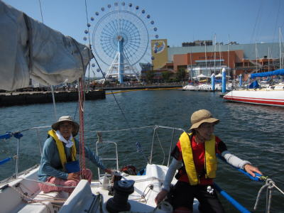

ヨットで駿河湾 | 2013年9月 幹事：サムちゃん |
|---|---|
| 今年はヨットに乗せて貰う機会が多く、色々覚えた気になっている今日この頃。（ホントはちょこっと覚えた程度なんだろうけど） 6月と7月にもヨット体験登場のお手伝いを兼ねて便乗させて頂いているので、初めの手順は何となく覚えています。やっぱ、連続して乗ると覚えてるモンですね。 で、今回は「お客さんなしで、真夏の熱気を避けたクルージングを」と誘われて駿河湾クルージングです。 ハーバーでは、良い感じに風が吹いていて、ヨット日和な気がします。 清水港の堤防を越えて駿河湾に出て、何となく由比方面を目指します。いつも東に向かっていたので、たまには違う方向にと思ったまでですが。 しかし、風がやんできたのか、グイグイ進む感じが有りません。 | |
|  ドックアウト |  初めは風がありました |
| 由比手前で転進。風が無いってこともも有るけど、真後ろから風が来るので、サムちゃんがスピンシートなるモノを張りました。（緑のシートね） このシート（帆？）を張るのは初めてです。船の前方に展開して、シート全体に風を受けて推進力に換えるみたいです。通常のメインとジブセールは、風を流して推進力にしているので、帆の設置向きが違います。 それでも、風が無いと進まないわけで、最後にはエンジンに頼ってしまうのですが。 それでも、夏の感じが残る海をセーリング、楽しかった〜 | |
 これがスピンシートだ！ |  ほんと、なんだか波も穏やか |
| 写真＆コメント ｂｙ べっしー | |